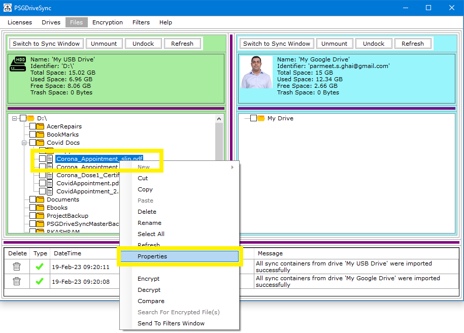
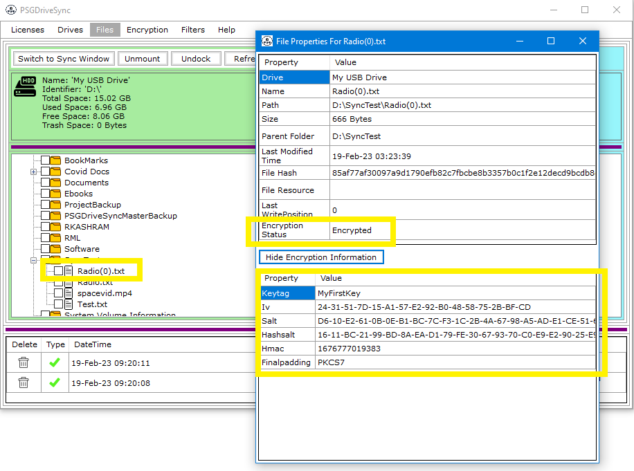

The Properties windows the same as it does in most windows operation systems. It allows you to see some of the important properties related to a
file or folder.
Following is a list of File properties which can be viewed under the properties window
Following is a list of Folder properties which can be viewed under the properties window
Following are the steps needed to be performed in order to view properties of a file or folder.
|
1 |
Right click on any file or folder of your choosing and then click on "Properties" in the right click menu |
 |
|
2 |
Properties window should open up next containing all the details of the file or folder that you right clicked on. If the properties windows was opened for a file then you can also click on "Show Encryption Status" to view encryption details of the file. |
 |